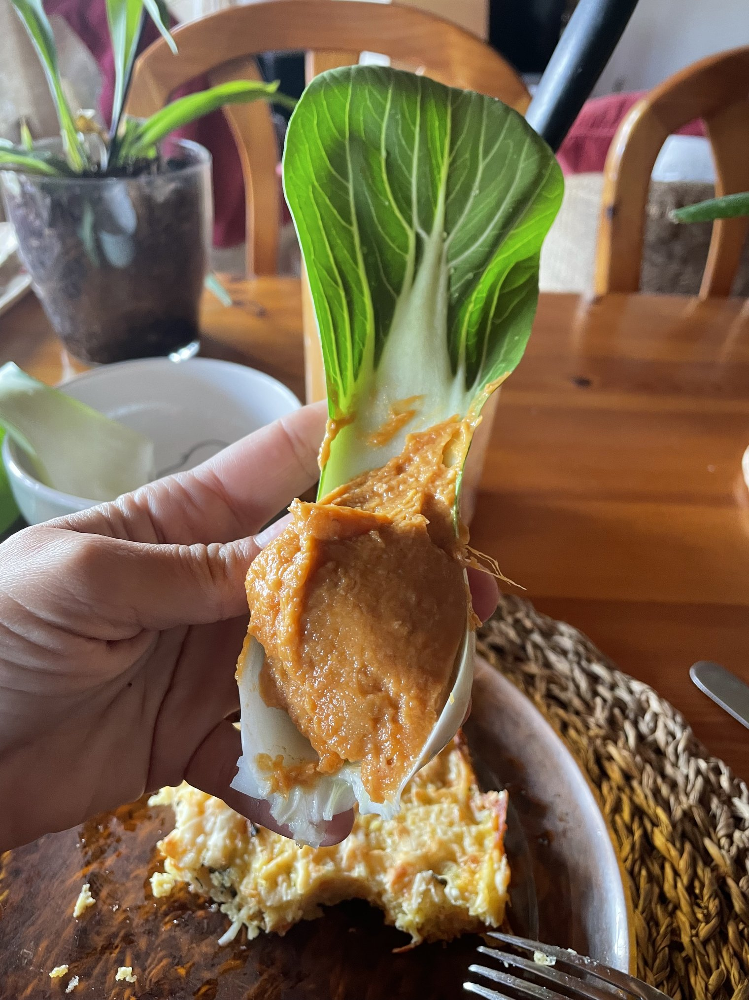

Dip de boniato, miso blanco y jengibre
Ingredients
×
- 450 g de boniato
- 2 cdas de jengibre rallado
- 2 cdas de miso blanco
- 1.5 cdas de tahini
- 2 cdas de salsa de soja
- 2 cdas de cebolla tierna picada
- 1.5 cdas de sésamo tostado
- pak choi

Preparación
Paso 1
Cortar 450 g de boniato (otra versión: 500g) y cocerlo al vapor.
Paso 2
Cuando esté listo, ponerlo con 2 cdas de jengibre rallado, 2 cdas de miso blanco, 1.5 cdas de tahini y 2 cdas de salsa de soja, y triturar con la batidora. Añadir un poco del agua de cocción para que quede más líquido.
Paso 3
Dejar que se enfríe y poner por encima 2 cdas de cebolla tierna picada y 1.5 cdas de sésamo tostado.
Paso 4
Servir con pak choi (baby bok choy), usando las hojas como barquitas.